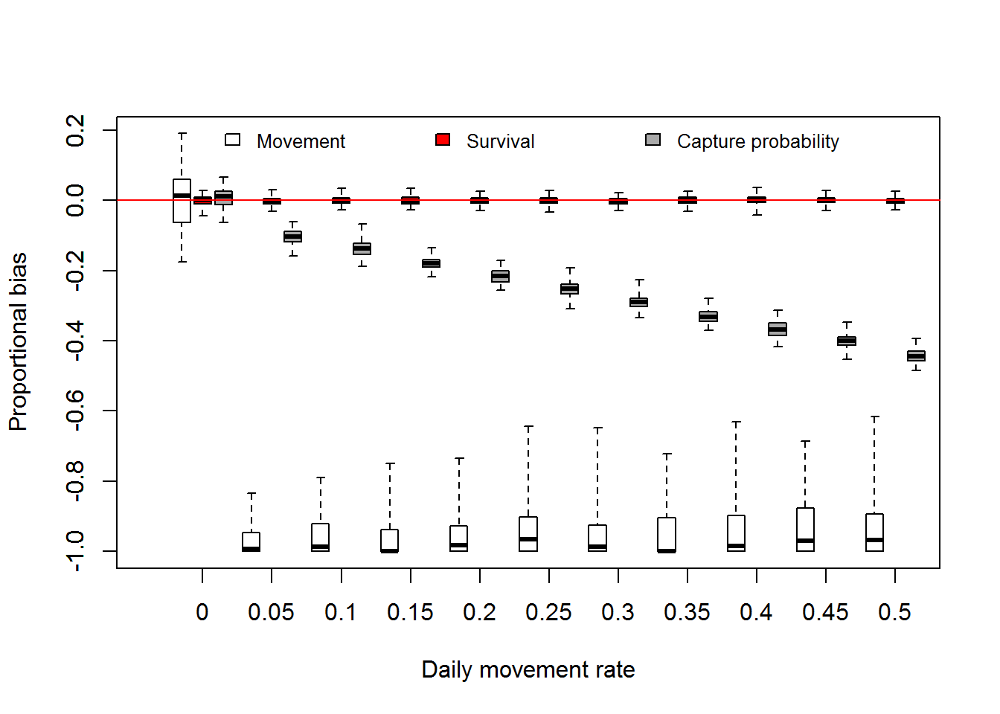

Here are the highlights for those that do not want to read the post in its entirety.
Want to engage in the process? Please let us know what you think in the comments or email mike.colvin [at] msstate.edu. In this post, we use measures of bias as a way to quantify the performance of a monitoring design. We are also investigating precision of estimates as well which will be addressed in a future post. We are also linking effort and costs to the designs.
Are there other metrics (e.g., bias, precision) you suggest we should be using to evaluate the performance of a monitoring design?
In a previous post, we looked at the effect of violating the assumption of closure. Specifically, we evaluated a situation we might encounter on the Missouri River where Pallid Sturgeon move in and out of a bend on a daily basis. The analysis showed that as daily movement rates increased, there was a positive bias associated with abundance estimates using the M0 abundance estimator for capture mark recapture (cmr) approaches (see here).
The EA team has evaluated varying monitoring approaches identified during the workshop by comparing known population (i.e., virtual) to simulated monitoring designs including catch effort and closed population estimators. One alternative to a catch effort program or estimating abundance using a closed population estimator like the M0 model is the robust design. The robust design is similar to the M0 estimator because it assumes a short period of closure to estimate abundance but also can estimate demographic rates among primary occasions like survival (\(\phi\)) and movement \((\gamma^\prime\) and \(\gamma^{\prime\prime})\) among primary occasions. The idea of primary and secondary occasions are illustrated in the figure below.

The time between primary occasions is commonly a year, and the population demographics like survival and movement can play out. The secondary occasions occur during a short period of time when closure can be assumed. Relevant assumptions for the secondary occasion within a primary occasion (i.e., periods of where closure is assumed) are:
We also assume:
The parameters estimated by the robust design include:
The movement and survival parameters are added here relative to the previous analysis, and the movement parameters especially need a bit of background information. Pallid Sturgeon are allowed to move around among primary occasions, and the \(\gamma^{\prime}\) and the \(\gamma^{\prime\prime}\) are illustrated in the figure below. The gist is that the parameters are probabilities of being in one location or another. There are varying ways to specify movement, but the most common one used is random where \(\gamma^{\prime}\) and \(\gamma^{\prime\prime}\) are assumed to be equal. Random movement is the assumption of previous applications of the robust design to estimate Pallid Sturgeon abundance and demographic rates (Steffensen et al. 2012, Winders and Steffensen 2014). In the figure below, the observable portion of the population would be fish within the bend, and the unobservable portion is those fish outside of the bend. Keep in mind these fish in the bend are ‘observable’ or in other words, you have a chance at catching them whereas fish outside the bend are unobservable because you are not sampling outside the bend.
If bends are used as the sampling unit, there may be an effect of day to day movement on abundance and demographic rate estimates. Given the results of daily movement on the closed population estimator, it seems likely that abundance will be overestimated with increased daily movement however it is not clear how the daily movement will influence survival and movement among primary occasions. To be clear, estimated movement rate refers to movement between primary occasions (e.g., year to year) and is different than daily movement rate (e.g., day to day). In the robust design daily movement rate is assumed to be 0 (i.e., fish stay put in a bend) but fish can move in and out of the bend between primary occasions. If biased estimates result because of daily movement, it may limit the ability of a monitoring design to meet the fundamental objectives identified in the workshop. Similar to the previous analysis we are going to kick the wheels, so to say, of the robust design to see how it performs with some level of daily movement in and out of the bend. The objectives of this analysis were to evaluate the effect of daily movement on estimates of abundance, survival, movement rate and capture probability.
To evaluate the effect of daily movement we simulated a cmr dataset for a 10 year period (i.e., 10 primary occasions) representing a single bend. The true parameters used to simulate the dataset were:
For simplicity, all parameters were assumed to be constant among years. The initial population (in and outside of a bend) was 500 fish with 300 of those Pallid Sturgeon occupying the bend. Daily movement rates of 0 to 0.5 in increments of 0.05 were used to simulate 100 replicate cmr datasets. We then estimate abundance, survival, movement (among primary occasions, not daily), and capture probability using a robust design estimator in Program Mark.
Not surprisingly, as daily movement rate increased, estimated bend-level abundance increased. This was a similar result to the analysis of the M0 model. The figure below illustrates the effect of daily movement on bend-level abundance estimates over time. The black lines are 100 replicates of true population dynamics and the red lines are the estimated population dynamics. As daily movement rate increases the gap between the black and red lines increases illustrating the positive bias.

In the figure above, we can calculate the bias of each yearly estimate for each replicate where bias is the estimated abundance minus the true abundance (Fortunately, this is simulated data, so we know what the true abundance is!). Bias is measured as numbers of fish and we can make statements like abundance was overestimated by 20 Pallid Sturgeon. However, a bias of 20 Pallid Sturgeon when the true abundance is 35 fish versus 4000 fish is different and therefore we used a proportional bias calculated as \((estimated-true)/true\). Proportional bias allows a comparison of estimates of varying magnitude. Proportional bias is illustrated in the figure below for the scenarios in the above plot. The red line denotes no bias.
Using the proportional bias values illustrated above we can calculate the average bias for each replicate, thus characterizing bias over the 10 year monitoring period. Using the mean proportional bias values, we can visualize the effect of increasing daily movement rates on bend-level abundance estimates for a 10 year period in the boxplot below.
We can also look at how estimates of survival, movement, and capture probability are affected by daily movement as well. Fortunately, we used constant values among years so no need to average among years. The boxplot below illustrates the effect of daily movement on estimates of movement rate and survival among primary occasions and capture probability. Even with a little bit of daily movement the among primary occasion movement probability has a substantial negative bias.
 The effect of daily movement on survival estimates was negligible as illustrated above, suggesting estimates of the trend may be robust to violating the assumption of closure among secondary occasions. Similar to the M0 analysis capture probability estimates show a negative bias with increasing daily movement rate.
The robust design has the potential to achieve a couple of fundamental objectives, specifically those relating to abundance and trend estimates. In addition estimated movement rates can inform one of the sub objectives identified during the workshop, movement. In the process of evaluating how a monitoring design can meet fundamental objectives, we are pushing the models to violate the assumptions and see what the consequences are. In this analysis violating closure can influence abundance estimates, but survival estimates appear to be robust. So it seems the robust design can do a decent job at estimating trend since there is no recruitment population trend is simply survival, but it may result in some overestimates of abundance. However given the input from the Nebraska crew we can potentially look at whether daily movement rates are large enough to result in any real issue. One caveat to consider is that if recruitment is occurring \(\lambda\) is survival plus recruitment rate, so further work needs to evaluate the effect of daily movement when recruitment > 0.
Coming up we will explore how the outcomes of alternative monitoring designs can be evaluated regarding the achieving the fundamental objectives.
Steffensen, K. D., L. A. Powell, and M. A. Pegg. 2012. Population size of hatchery-reared and wild pallid sturgeon in the lower Missouri River. North American Journal of Fish Management 32:159–166.
Winders, K. R., and K. D. Steffensen. 2014. Population size of pallid sturgeon, Scaphirhynchus albus (Forbes & Richardson, 1905), in the lower Missouri River near Kansas City, Missouri, USA. Journal of Applied Ichthyology 30:1356–1361.